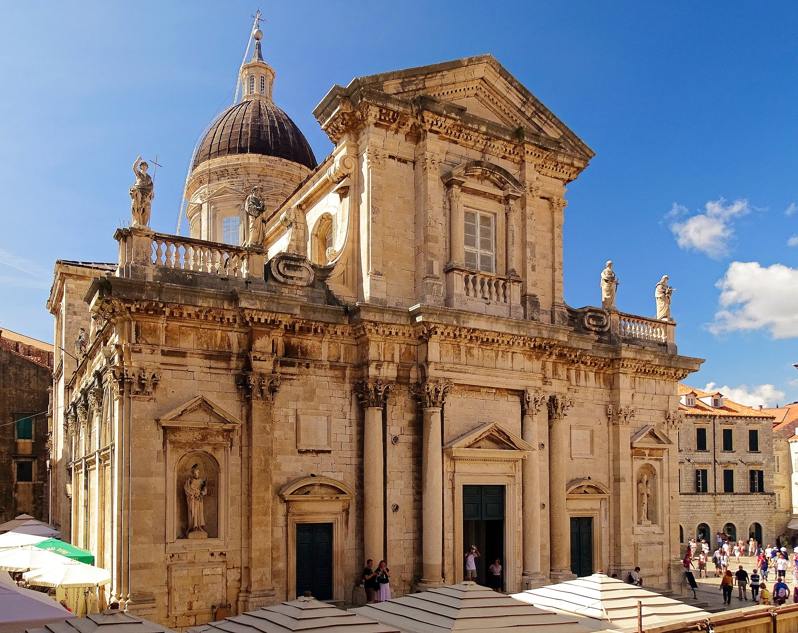
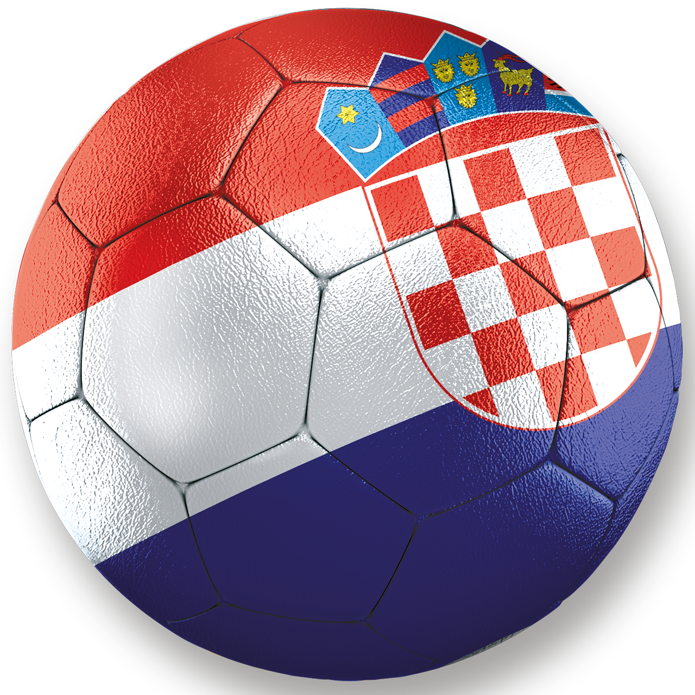

Pääkaupunki
Zagreb (779 145 as.)
Pinta-ala
56 594m²
Väkiluku
4 284 389
Valuutta
Kroatian kuna (HRK)
Viralliset kielet
Kroatian kieli
BKT
78,9 mrd.USD
Historia
Kroatiassa Adrianmeren rannikoilla oli maanviljelyä ehkä jo 7000-luvulla eaa.
Kroatian ensimmäiset tunnetut asukkaat olivat illyyrit, joiden keskus oli Kvarnerinlahden seuduilla.
Kroatian ovat valloittaneet vuorotellen niin roomalaiset, venetsialaiset, turkkilaiset kuin Habsburgitkin.

Toisen maailmansodan jälkeen Kroatia oli yksi Jugoslavian tasavalloista. Se julistautui itsenäiseksi vuonna 1991,
mikä johti Kroatian sotaan. Sodan aikana serbienemmistöisen Krajinan alue päätti liittyä Serbiaan. Kroatia vastasi lähettämällä Krajinaan sotilaita, mitä Serbia
piti hyökkäyksenä itseään vastaan ja ryhtyi tukemaan aseellisesti Kroatian serbialueiden sissejä. Jugoslavian liittoarmeija,
joka oli käytännössä muuttunut Serbian kansallisarmeijaksi, myös pommitti kohteita Kroatiassa. Serbit valtasivat kolmanneksen
Kroatian pinta-alasta ja hääsivät muita etnisiä ryhmiä valloittamiltaan alueilta.
Tammikuussa 1992 solmittiin tulitauko. Kroatian serbeille taattiin autonomia, ja maahan saapui 10 000 YK-sotilasta turvaamaan rauhaa. Tulitauko oli kuitenkin hatara.
YK-joukkojen lähdettyä vahvistunut kroaattiarmeija tunkeutui serbialueille ja alkoi vallata niitä itselleen. Autonomia peruttiin,
ja satojatuhansia Kroatian serbejä pakeni Serbian puolelle. Kroatian sota loppui virallisesti joulukuussa 1995 Daytonin rauhansopimukseen.
Kroatian sota oli raakaa ja kohdistui siviileihin. Kymmeniä tuhansia ihmisiä kuoli ja neljännesmiljoona ajettiin kodeistaan.
Maantiede
Kroatialla on monta naapurivaltiota: Slovenia, Unkari, Serbia, Montenegro, Bosnia ja Hertsegovina sekä Adrianmeren vastakkaisella puolella Italia.
Bosnia-Hertsegovinan lyhyt 20 kilometrin pituinen rantakaistale jakaa Kroatian manneralueen kahteen toisistaan erillään olevaan alueeseen niin, että Dubrovnik
lähiympäristöineen on eksklaavina erillään muusta Kroatiasta.
Kroatiasta 53% on viljavaa alankoa, loput pinta-alasta jakautuvat tiheämetsäisen vuoriston sekä kivikkoisen rannikkokaistaleen kesken.
Vuoristoalueen kalkkikivisiin kallioihin on muodostunut veden voimasta erilaisia pintamuodostumia, luolia sekä doliineja.
Adrianmeri on matala meri, ja sen keskisyvyys on 173 metriä. Kroatian rantaviiva ilman saaria on 1 777 kilometriä ja saarten kanssa
5 835 kilometriä. Saaria rannikolla on kaikkiaan 718, ja niistä asuttuja on noin 50. Suurimmat saarista ovat Krk ja Cres.
Ilmasto
Kroatian ilmasto vaihtelee alueittain, mutta pääosin ilmasto on lauhkeaa. Rannikolla vuoden keskilämpötila vaihtelee 12 asteen ja 17 asteen välillä. Adrianmeren rannikolla lämpimimmän kuukauden keskilämpötila on yli 22 astetta, kun taas vuoristoissa kylmimmän kuukauden keskilämpötila on alle -3 astetta. Vuotuinen sadanta on ulkosaaristossa alle 700 millimetriä ja Gorski kotarin vuoristossa jopa 3 500 millimetriä. Sisämaan tasangoilla sadanta vaihtelee 700 millimetristä 1 000 millimetriin.
Luonto ja eläimistö
Kroatian luonto on europpalaisittain monipuolinen, ja kasvilajien määrä on siellä Slovenian ja Albanian jälkeen Euroopan kolmanneksi suurin pinta-alaan nähden.
Noin 44 prosenttia Kroatiasta on metsän peitossa. Yleisimpiä lajeja ovat pyökit, tammi, talvitammi ja euroopanvalkopyökki.
Kroatian nisäkkäisiin kuuluu 101 lajia. Maan vuoristoissa elää kaikki kolme Euroopan suurta lihansyöjää, karhu, susi ja ilves. Kroatian metsissä ja
vuoristoissa tavataan myös muun muassa gemssiä, villisikaa, näätiä, mäyrää ja kettuja sekä Dinaaristen Alppien jäänteitä dinaarienmyyrää ja tammihiiren
alalajia Eliomys quercinus dalmaticus. Adrianmeren ainoa merinisäkäs on puolestaan pullokuonodelfiini.
Kroatian lintulajisto on eurooppalaisittain monipuolinen, ja yli 230 lintulajia pesii Kroatiassa. Drava- ja Savajoen kosteikolla pesii muun muassa kapustahaikaria,
haikaria, tiiroja, merikotkia, mustahaikaria, kattohaikaria ja pikkukiljukotkia. Metsien lajeja ovat puolestaan useat pöllöt, tikat, metso ja maakotka.
Rannikoiden lintuja ovat hanhikorppikotka, välimerenhaukka ja välimerenlokki.
 Kroatian matelijalajisto on moninaisimmillaan Dalmatiassa. Saaristossa on puolestaan erityisesti eristyneitä endeemisiä liskoja. Sammakkoeläimiä on puolestaan
erityisesti Karpaattien altaassa. Karstialueen luolastojen endeeminen laji on olmi. Mustanmeren valuma-alueen vesistöissä on 81 ja Adrianmeren valuma-alueen
vesistöissä 88 kalalajia. Lisäksi 18 lajia on endeemisiä karstialueelle. Adrianmeren lajirunsaita elinympäristöjä ovat Posidonia-meriheinäniityt.
Kroatian matelijalajisto on moninaisimmillaan Dalmatiassa. Saaristossa on puolestaan erityisesti eristyneitä endeemisiä liskoja. Sammakkoeläimiä on puolestaan
erityisesti Karpaattien altaassa. Karstialueen luolastojen endeeminen laji on olmi. Mustanmeren valuma-alueen vesistöissä on 81 ja Adrianmeren valuma-alueen
vesistöissä 88 kalalajia. Lisäksi 18 lajia on endeemisiä karstialueelle. Adrianmeren lajirunsaita elinympäristöjä ovat Posidonia-meriheinäniityt.
Luonnonsuojelu
Kroatian kansallispuistoja ovat 14 saaresta koostuva Brijunin kansallispuisto, 89 pikkusaaren Kornatin kansallispuisto, Krkan kansallispuisto samannimisen joen
varrella, Mljetin kansallispuisto maan eteläosassa, Paklenican kansallispuisto metsäalueella meren ja vuorten välillä, Plitvicen järvien kansallispuisto, jossa on
16 pientä järveä metsän keskellä, Risnjakin kansallispuisto samannimisellä vuorella ja Pohjois-Velebitin kansallispuisto karskimaalla.
Risnjakin alueella tavataan paljon hirvieläimiä, karhuja, metsäkissoja ja ilveksiä. Satunnaisesti nähdään myös susia ja villisikoja. Plitvicen järvien kansallispuisto
on susien suojapaikka. Siellä, samoin kuin Krkassa, suojellaan myös saukkoja. Krka on keskeinen muuttolintujen levähdysalue, samoin kuin Kopacki ritin luonnonpuisto maan itäosassa.
Talous
Matkailu on lämpimimpinä vuodenaikoina merkittävä tulonlähde. Vuonna 2006 Kroatiassa kävi n.8,6 miljoonaa ulkomaalaista turistia.
Varsinkin 2010-luvun jälkeen Kroatian suosio on noussut ja sen rantakohteisiin järjestetään runsaasti pakettimatkoja myös Suomesta.
Teollisuudenaloista vahvimpia ovat laivanrakennus, elintarviketeollisuus ja kemianteollisuus.
Teollisuus työllistää noin neljänneksen työvoimasta ja tuottaa viidenneksen bruttokansantuotteesta.
Viidesosa väestöstä saa toimeentulonsa maanviljelystä. Kroatiassa viljellään eri viljalajeja ja kasvatetaan hedelmiä ja tupakkaa laajalti.
Myös lampaankasvatus on yleistä. Maassa on runsaasti metsävaroja ja hiili- ja rautakaivostoimintaa.
Kulttuuri
Kroatiassa on seitsemän Unescon maailmanperintökohdetta, joista Plitvicen kansallispuisto on luontokohde, ja kulttuurikohteita ovat Dubrovnikin vanha kaupunki, Eufrasiuksen basilikan episkopaalinen rakennusryhmä Porečin kaupungin historiallisessa keskustassa, Historiallinen Trogirin kaupunki, Pyhän Jaakobin katedraali Šibenikissä, Stari Gradin kulttuurimaisema, Splitin historiallinen rakennusryhmä ja Diocletianuksen palatsi.
Musiikki
Kroatialle tunnusmerkillisin musiikki löytyy monipuolisesta kansanmusiikkiperinteestä, joka on saanut vaikutteita monesta eri lähteestä. Varhaisimmat vaikutteet tulivat keskiajalla, jolloin unkarilaiset ja venetsialaiset hallitsivat maata. Kansanmusiikin käytetyin soitin on kolme- tai viisikielinen tamburitza. Laulumusiikissa elävät klapa-laulut, jotka ovat erityisen suosittuja Splitin ympäristössä. Međimurjen alueella vaikuttaa puolestaan unkarilainen usein sitralla säestetty kansanmusiikki.
Elokuva
Kansainvälistä mainetta sai ohjaaja-käsikirjoittaja Veljko Bulajić, jonka elokuva Juna ilman aikataulua oli 1959 ehdokkaana Cannesin elokuvajuhlien Kultaiseen palmuun ja Neretvan taistelu 1969 parhaan vieraskielisen elokuvan Oscariin. Dušan Vukotićin ohjaama Surogat voitti 1961 ensimmäisenä Yhdysvaltain ulkopuolelta tulleena elokuvana parhaan lyhytanimaation Oscarin. Kroatian elokuva-alan tunnetuin henkilö on kuitenkin tuottaja Branko Lustig, joka on Yhdysvalloissa voittanut Oscar-palkinnon elokuvien Schindlerin lista ja Gladiator tuottajana.
Urheilu
Kroatian jalkapallomaajoukkue saavutti MM-kilpailuissa pronssia 1998 ja hopeaa 2018. EM-kilpailuissa joukkue on edennyt puolivälieriin 1996 ja 2008.
Kroatian käsipallomaajoukkue on voittanut olympiakultaa 1996 ja 2004 sekä saanut pronssia 2012. MM-kilpailuissa se on saanut kultaa 2003, hopeaa 1995,
2005 ja 2009 sekä pronssia 2013. EM-kilpailuissa joukkue on saavuttanut hopeaa 2008 ja 2010 sekä pronssia 1994, 2012 ja 2016.
Kroatian koripallomaajoukkue saavutti olympiahopeaa 1992. Lisäksi se on saanut pronssia MM-kilpailuissa 1994 sekä EM-kilpailuissa 1993 ja 1995.
Kroatian vesipallomaajoukkue voitti olympiakultaa Lontoossa 2012 sekä sai olympiahopeaa 1996 ja 2016. Se voitti maailmanmestaruuden 2007 ja 2017, sai MM-hopeaa
2009 sekä -pronssia 2009, 2011 ja 2013. Joukkue on voittanut myös Euroopan-mestaruuden 2010, saanut EM-hopeaa 1999 ja 2003 sekä EM-pronssia 2018.
Kroatia on saavuttanut olympialaisissa 15 kulta-, 16 hopea- ja 13 pronssimitalia.
Tietoa kerätty wikipediasta ja globaliksesta